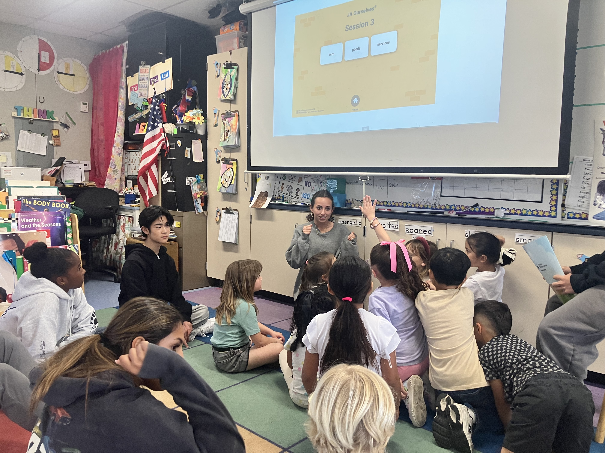
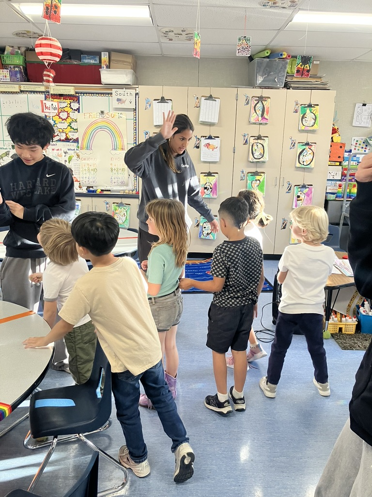
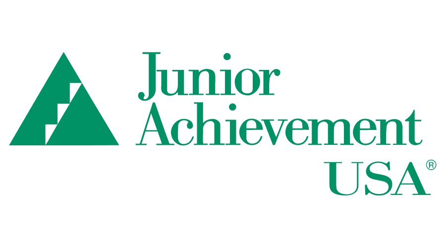
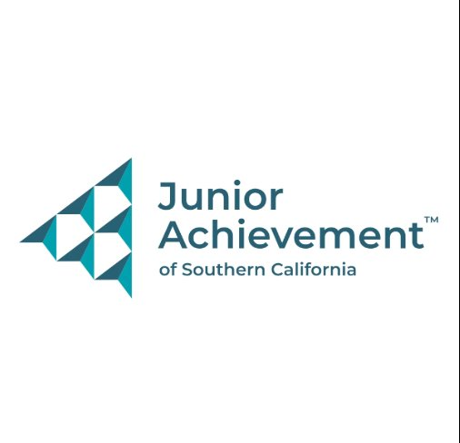
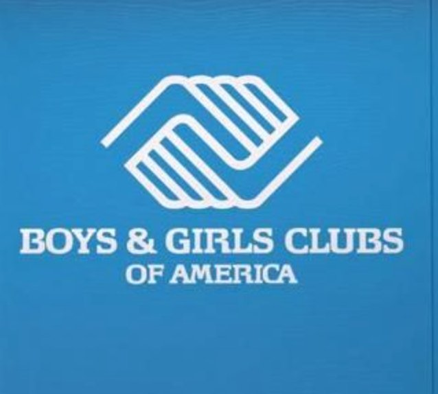
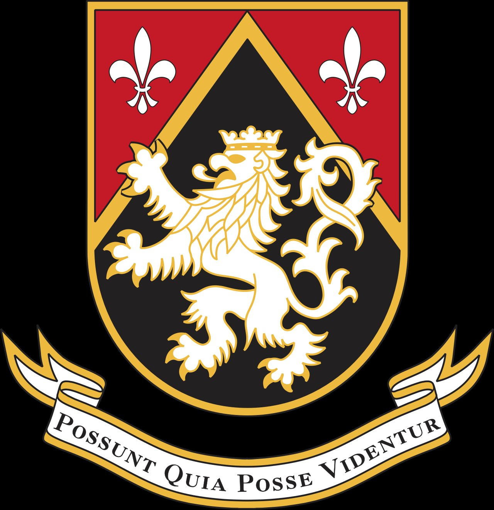

We explore how young people develop financial habits across cultures, and build hands-on learning experiences that help them practice the decisions that matter most before the stakes are real.
Scroll
17
Student Leaders
Trained and teaching
25+
Students
Weekly lessons


Our Mission
Financial literacy is a behavior problem, not a knowledge problem
We live in a world engineered for overconsumption. Frictionless payments, endless scroll, buy-now-pay-later, one-click checkout, and the list keeps growing. Every system around us is designed to make spending faster, easier, and less visible. The result is a generation accumulating debt before they have the vocabulary to name what is happening.
Financial literacy programs have tried to solve this with information. We believe the real gap is not knowledge, it is experience. Students do not need to be told that instant gratification is costly. They need to feel it, navigate it, and build the instincts to recognize it in the real world.
Through hands-on Decision Labs grounded in behavioral science, we help students practice the moments that matter, before the stakes are real. Because the wealth gap does not start with income. It starts with decisions.
Our foundational partnership. A team of trained high school student leaders deliver weekly financial literacy lessons to middle school students across Southern California.
Partnership 02
Boys and Girls Club
Expanding access to underserved communities throughout the year, reaching different age groups across Southern California.
Coming Summer 2026
Wealth Bridge Decision Labs, Forge
Through Harvard-Westlake's Forge program, we are prototyping four behavioral Decision Lab modules.
Our Partners

Junior Achievement USA

Junior Achievement SoCal

Boys and Girls Club

Harvard-Westlake School
"The wealth gap does not start with income. It starts with decisions."
Lauren Kvamme
Founder, Wealth Bridge Global
Expansion
Where we are headed in the next year
100
Students reached through financial literacy curriculum
6+
Student leaders trained and running lessons independently
4
Decision Lab modules fully prototyped and tested with real students
3
Community partnerships actively bringing this work into underserved schools
About
About Us
We are rethinking how financial literacy is taught
Lauren Kvamme
Founder and Executive Director
Lauren Kvamme attends Harvard-Westlake School and is the founder of Wealth Bridge Global, a behavioral finance education initiative she started after partnering with Junior Achievement SoCal. She noticed that most financial education programs miss that students are not struggling because they lack information. They struggle because they had never practiced making real decisions under real conditions.
Over spring break 2026, Lauren conducted comparative research in Costa Rica, studying how different payment systems and financial environments shape the money habits young people form early in life. That research became the behavioral foundation for Wealth Bridge Decision Labs, four hands-on modules now in development through Harvard-Westlake's Forge program.
Lauren has met with advisors at Goldman Sachs and Delta as well as connected with researchers at UCLA. Outside of Wealth Bridge, Lauren is passionate about economics, behavioral science, and building things that actually change how people think and act, not just what they know.
What We Believe
Three principles behind everything we build
01
Experience over information
Students learn by doing, not by hearing. Every Wealth Bridge module puts students in a real decision scenario before it explains the concept behind it. Feeling it first is the point.
02
Behavior over knowledge
The gap between knowing what to do and actually doing it is where financial outcomes are decided. We design for behavior change, not comprehension. Those are two completely different targets.
03
Access over exclusivity
The students who most need behavioral financial tools are the ones least likely to receive them. We bring this work directly into underserved communities through JA SoCal and the Boys and Girls Club.
Our Team
Student-led, research-backed
Wealth Bridge is built by students, for students. Every person on this team teaches, researches, and builds alongside each other.
Archer Aguilar
Director of Expansion
Archer leads expansion strategy for Wealth Bridge, working to grow the program's reach across new schools and communities. He brings focus and drive to every new opportunity the team pursues.
Sophia Hemideh
Site Director of Burbank
Sophia oversees Wealth Bridge programming at the Burbank site, managing operations, student relationships, and the day-to-day experience that makes each session work.
Isaac Fujikawa
Operations Founder
Isaac built the operational foundation that keeps Wealth Bridge running smoothly. From logistics to coordination, he makes sure every session happens the way it is supposed to.
Dylan Kaw
Community and Recruitment Founder
Dylan connects Wealth Bridge to the communities it serves and recruits the student leaders who power the program. He has a natural ability to get people excited about what we are building.
Elle Davis
Curriculum and Teaching Founder
Elle designed the teaching framework that Wealth Bridge student leaders use in every session. She brings warmth, clarity, and a deep belief that every student deserves a real financial education.
Our Story
From a classroom to a movement
Wealth Bridge Global began as a student-led financial education initiative through Junior Achievement SoCal. What started as a team of high schoolers teaching younger students quickly surfaced something important: students were not struggling because they lacked information. They were struggling because they had never practiced making real decisions under real conditions.
That observation became the foundation for everything Wealth Bridge has built since, from the comparative research conducted in Costa Rica to the behavioral Decision Labs now in development through Harvard-Westlake Forge. The goal has always been the same: close the gap between knowing and doing, before the stakes are real.
Updates on our programs, research, partnerships, and the students we work with.
Featured
June 2026
Wealth Bridge Decision Labs selected for Harvard-Westlake Forge Program
This summer, our team is developing four hands-on behavioral finance modules through Harvard-Westlake's competitive Forge program. The Decision Labs use real spending scenarios to help students experience the forces that shape financial choices, before the stakes are real.
Comparative research in Costa Rica on payment systems and financial behavior
How do different financial environments shape the money habits young people form? Founder Lauren Kvamme spent spring break conducting fieldwork in Costa Rica to find out.
Wealth Bridge expands to Boys and Girls Club for summer 2026
Beginning this June, our team brings programming to the Boys and Girls Club Stevenson site, reaching a new group of rising 9th and 10th graders from underserved communities.
Why we build around behavioral science, not traditional financial literacy
The Stanford Marshmallow Experiment, MIT's pain of paying research, and Kahneman's work on present bias all point to the same conclusion: the gap is not knowledge, it is behavior.
Meeting with Goldman Sachs, financial literacy is a behavior problem not a knowledge problem
A conversation with a Goldman Sachs advisor confirmed what our research had been pointing to, and directly shaped the design philosophy behind Wealth Bridge Decision Labs.
Wealth Bridge launches student leader training program with Junior Achievement SoCal
Six high school students trained to deliver weekly financial literacy lessons to middle schoolers across Southern California, building the peer-teaching model at the core of our work.
Lauren Kvamme speaks at Junior Achievement SoCal on the importance of their work
Lauren spoke to an audience of educators and community leaders about why Junior Achievement's mission matters and the impact their programs have on the students they serve.
Four hands-on behavioral finance modules developed through Harvard-Westlake's Forge program. Students do not sit and learn about financial concepts, they make decisions under real conditions and examine why they decided the way they did. Launching summer 2026.
Founding Partnership
Junior Achievement SoCal
Our foundational partnership. Wealth Bridge student leaders deliver weekly financial literacy lessons to middle school students across Southern California through JA's established network. JA provides curriculum infrastructure, school access, and institutional credibility.
Community Partnership
Boys and Girls Club
Expanding access to underserved communities throughout the year, reaching different age groups across Southern California through the Boys and Girls Club network.
Academic Partnership
Harvard-Westlake School
Through Harvard-Westlake's Forge program, Wealth Bridge is developing four behavioral Decision Lab modules this summer. Forge provides the mentorship, expert access, and structured environment to turn an idea into a real, tested product.
Junior Achievement, National
After Forge, the goal is to bring Wealth Bridge Decision Labs to Junior Achievement's national network as a behavioral complement to their existing financial literacy curriculum. JA teaches concepts. Wealth Bridge teaches behavior. The two are not competing, they are the missing layers of each other.
Decision Labs
How we teach
Students do not sit and learn about financial concepts, they make decisions under real conditions and examine why they decided the way they did.